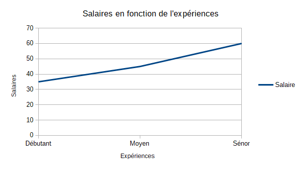

Salaire
Débutant : 35k €
Moyen : 45k €
Sénor : 60k €
Accueil / Fiche métiers / Data Analyst
Débutant : 35k €
Moyen : 45k €
Sénor : 60k €
Inteligence Artificielle
Analyse de données
Bac +5
Le data analyst a pour rôle de créer, d’administrer, trier des grandes masses de données appeler Big Data. Le data analyst doit donc créer des algorithme permettant d’extraire des données de bases de données ou fichier pour les transformer en statistique ou autre structure de données et en extraire un sens, ce qui permettent à une organisation de prendre des décisions directionnelles.
Ce graphique montre l'évolution du salaire en fonction du salaire. Le salaire du Data Analyst évolue de manière généralement linéaire.
